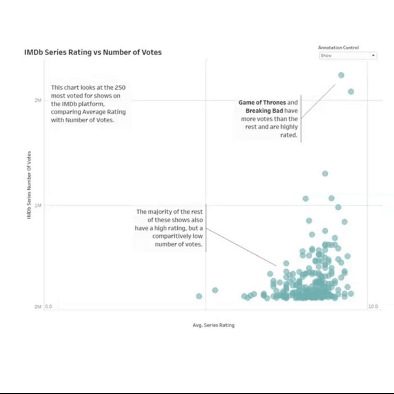
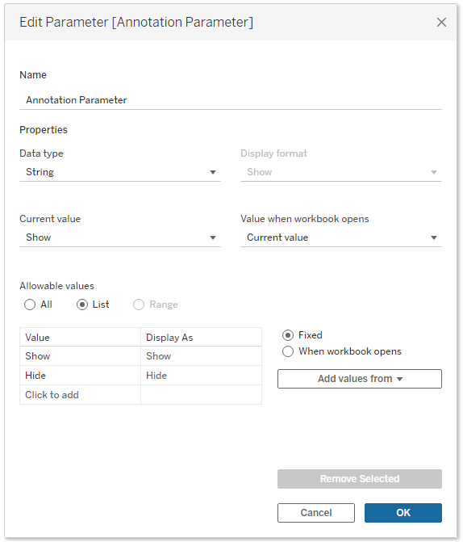
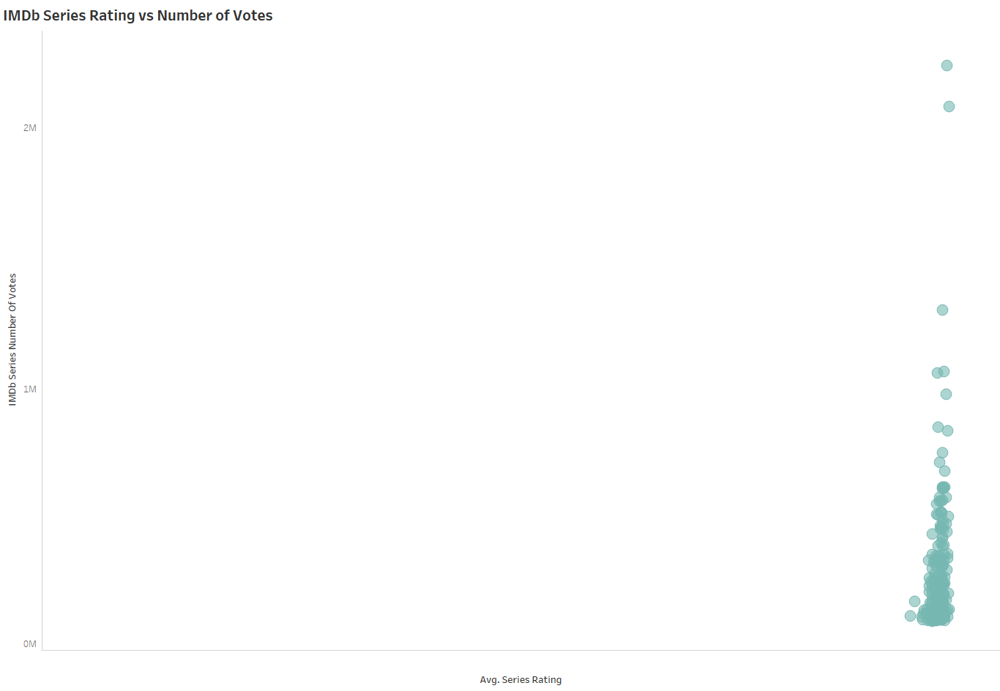
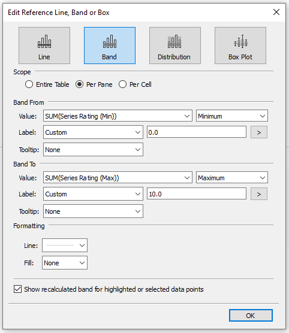
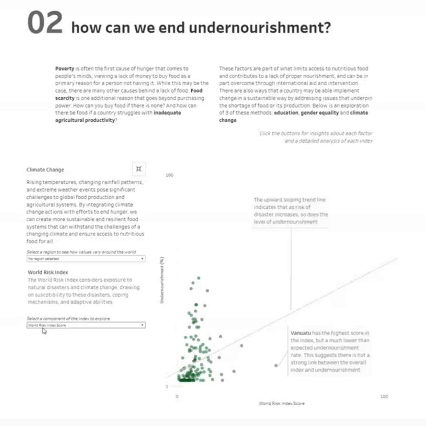

Last month, I had the joy of attending DataFam Europe, Tableau’s first conference offering in Europe since 2019. The event saw over 600 people come together for an amazing 2 days of content. It was fantastic to see so many people in person and have this opportunity to connect with old friends and make new ones.
The conference began with a keynote by Nathalie Nahai. She shared insights on the psychology of AI, exploring the good and potential bad new technology. There are huge benefits that AI presents to us as individuals and society, but there could also be drawbacks if we take this too far. The Tableau keynote on day 2 was also brilliant, and it’s exciting to see what is in store for Tableau users in the coming months. Tableau Agent was a big focus. It gives users a way to query data and have the software build visualisations for you. Simply ask it a question of your data, and up will pop a suggested viz. The possibilities are endless!
As with every Tableau conference, there were a lot of very valuable breakout sessions to attend. Highlights for me included Rosa Mariana de León-Escribano talking about templates, Shreya Arya speaking on the benefits of wireframing, and Tristan Guillevin releasing a new tool to enable you to format all your filters at once. What really stood out was the emphasis on the community. Some 70% of sessions were run by community members which really demonstrates that the strength of Tableau lies with us, the people that love the tool.
Another highlight of the whole event was the “DataFam Slam” tip battle that saw 5 of Tableau employees take on 5 members of the DataFam to see which team could offer the best tips. Each participant was given 2 and a half minutes to share their tip, and the audience vote for their favourite. All the tips were excellent, but ultimately Team DataFam took the win.

I want to share with you here a more detailed version of the tip I shared in this session. There was a lot to cover in those 2 and a half minutes, and I thought giving a deeper breakdown would be useful for people who found it interesting (and all of you that weren’t there!). The tip enables your users to show or hide annotations as they wish so that they can see the information provided or hide it if it isn’t applicable to them.
The On-Stage Example

How to…
We begin by creating the parameter. This is a simple string parameter with 2 options: show or hide.

From this we can create the first of our calculated fields. This will replace one of the axes in our view and make the axis change as we change the parameter. In this, when we are showing the annotations, we use the metric as standard. For the case when we aren’t showing the annotations we simply add a really big number to the metric. In this example, the data will only ever be between 0 and 10, so I’ve added 100. You can adjust the number to add based on your data.
CASE [Annotation Parameter]
WHEN 'Show' THEN [IMDb Series Rating]
WHEN 'Hide' THEN [IMDb Series Rating] + 100
END
If we add this to the view, we can start to see it taking shape but we aren’t done just yet. When the parameter is set to show annotations, we see the chart displays as expected. However, if we change it to hide the annotations, all our data points bunch up to the right and the annotation is still visible.

To fix this, we need the relative range of our axis to not change. It should always go from 0 to 10, or 100 to 110. Start by editing the axis and deselecting “show zero”. This seems to work. We can now successfully show and hide the annotation without the data points moving on the screen. There is still an issue here though. Our axis actually only goes from the smallest value to the largest value, not 0 to 10.
There are a few ways that you can fix this, but I think the easiest is through reference lines. When you have reference lines in a view, the axis will always extend to include these lines (unless your axis is fixed). This is where our other two calculations come in.
We need one calculation for the minimum axis value. In this (and most other cases) this will be 0. We can duplicate our original axis calculation, and change any reference to the metric to be 0. The process is similar for the maximum.
CASE [Annotation Parameter]
WHEN 'Show' THEN 0
WHEN 'Hide' THEN 0 + 100
END
Duplicate the calculation and change any reference to the metric to be your highest value – in this case it’s 10. The best part of this is that you don’t have to hardcode these values. You can use a max calculation so that it can adapt as your data changes.
CASE [Annotation Parameter]
WHEN 'Show' THEN 0
WHEN 'Hide' THEN 0 + 100
END
Take these two calculations and add them to detail in the sheet’s marks pane. Then, right click on your axis and select “Add reference line”. We are going to make this a reference band so that we can include both limits in one step. Make your minimum value calculation to be the start of the band, and the maximum value calculation to be the end of the band. You can add a label if you wish, and change the formatting of the line to fit your style.

As a final step, hide the tick marks on your actual axis. These give away the trick that we have used as the values will be between 100 and 110 when the annotations are hidden which is very misleading. You can also add additional reference lines to act as gridlines if you wish to.
Another Example
I first used this trick in my “Love for Food, Hunger for Change” visualisation from last year’s IronViz qualifier round. The dashboard looks at the issue of undernourishment around the world. In the second section of the dashboard, I explored three ways that we can end undernourishment: education, gender equality, and climate change. An index is used for each of these, and I wanted to give people the ability to see the data of the individual aspects that make up each index. I also wanted to add annotations to each of these to provide an analysis at each step of the way. Without the tip I have shared here, this would have required 17 sheets. Having that many sheets will hamper the performance of any dashboard, as well as making it more complicated to build and harder to maintain.

//
I hope you enjoyed this tip, and can’t wait to see how you use it to make your annotations more effective. Annotations are brilliant, and so often underused. I think that making them dynamic you can improve their usefulness and applicability within your work.
Take care // Chris